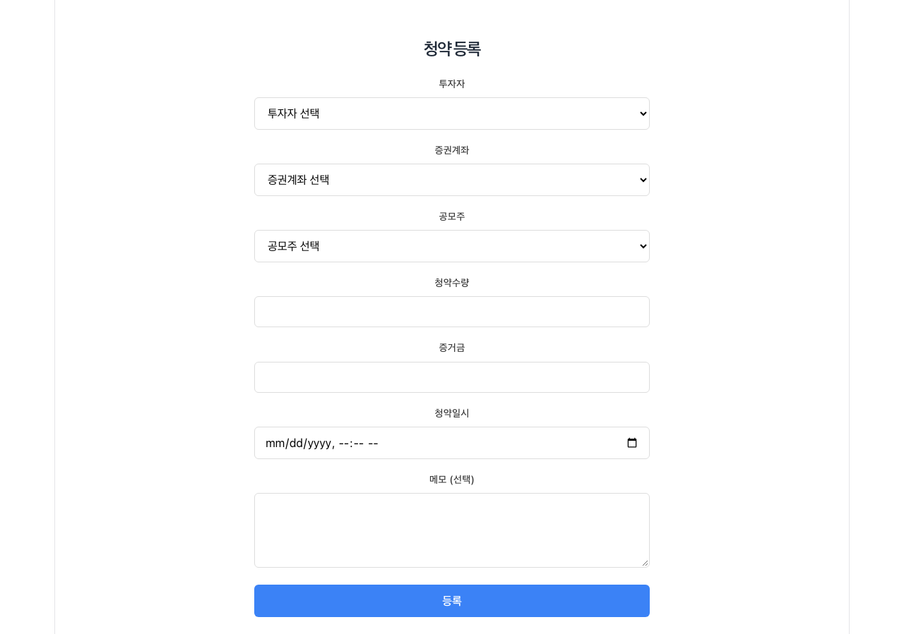
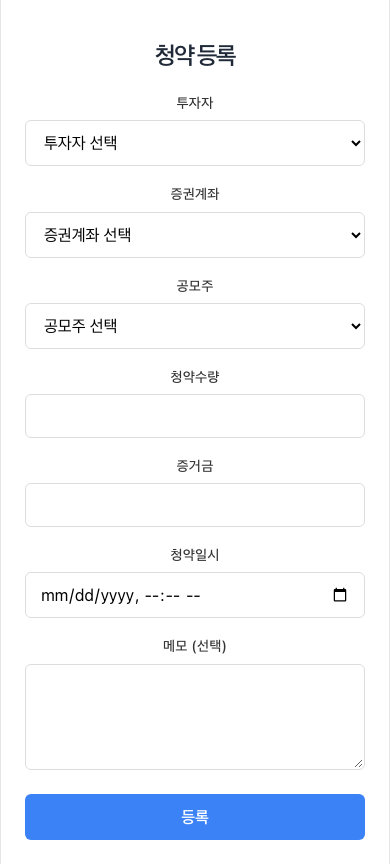
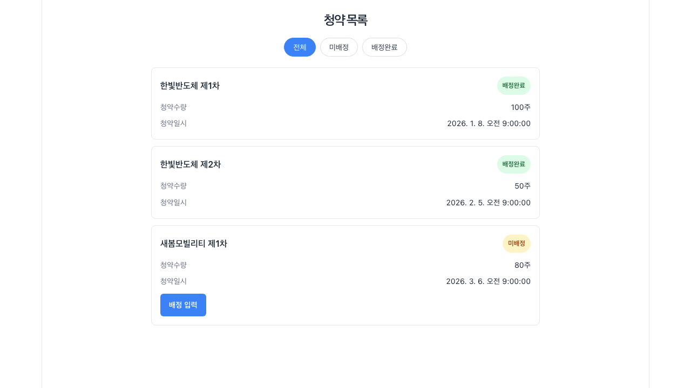
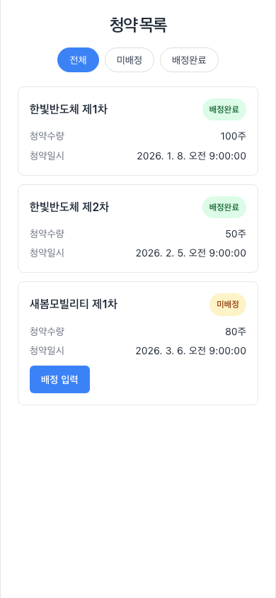
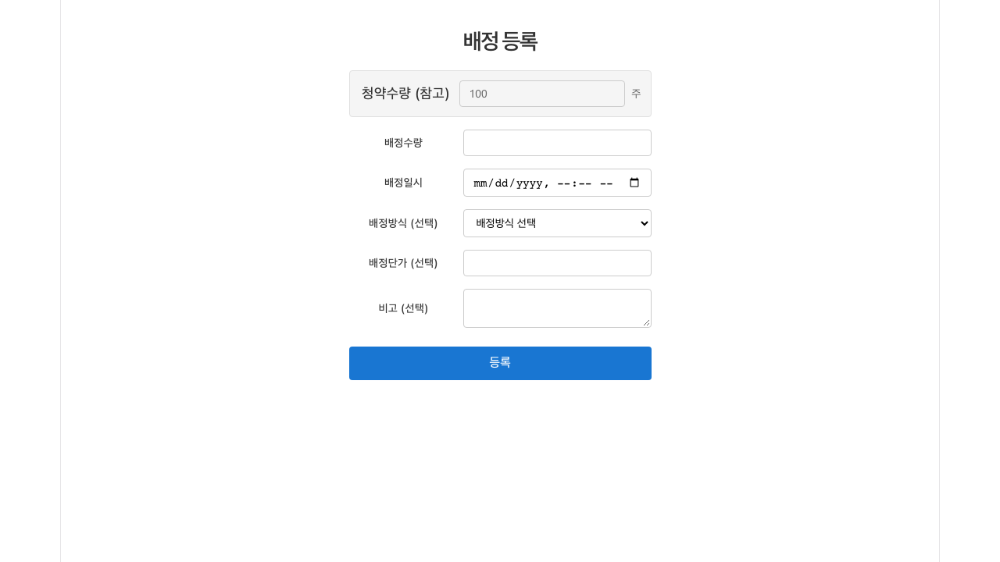
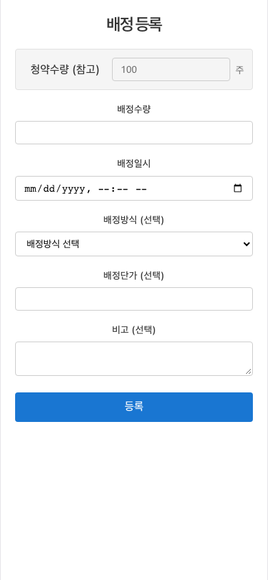

1. 청약 등록
공모주에 청약한 사실과 청약 수량·증거금을 기록하는 화면입니다.
화면의 목적
어느 투자자가 어느 증권계좌로 어떤 공모주를 몇 주 청약했는지 기록합니다. 이 기록이 배정 등록·매도 등록의 기준 데이터가 됩니다.
입력 및 검증: 투자자·증권계좌·공모주·청약수량·증거금·청약일시는 필수입니다. 청약수량은 0 초과 정수, 증거금은 0 이상 정수여야 합니다.
주요 입력 필드
- 투자자: 청약한 사용자 (목록에서 선택)
- 증권계좌: 청약에 사용한 계좌 (목록에서 선택)
- 공모주: 등록된 공모주 회차 (목록에서 선택)
- 청약수량: 청약한 주식 수 (0 초과 정수)
- 증거금: 납입한 금액 (0 이상 정수)
- 청약일시: 청약 시각
- 메모 (선택): 개인 기록
사용 흐름
- 투자자 → 증권계좌 → 공모주 순서로 선택합니다.
- 청약수량, 증거금, 청약일시를 입력합니다.
- 등록을 선택해 저장합니다.


필수 항목이 비어 있거나 수량이 0 이하이면 입력 칸 아래에 안내 문구가 표시되고 저장되지 않습니다. 저장 후에는 청약 목록에서 방금 등록한 내역을 확인할 수 있습니다.
2. 청약 목록
등록된 청약 내역을 상태별로 모아 보고 배정 입력으로 넘어가는 화면입니다.
화면의 목적
카드 한 장이 하나의 청약 내역을 나타냅니다. 상단의 상태 필터로 전체·미배정·배정완료를 전환해 지금 처리할 대상만 볼 수 있습니다.
확인할 정보: 카드에는 공모주 회차명, 배정 상태, 청약수량, 청약일시가 표시됩니다. 아직 배정되지 않은 카드에만 배정 입력 버튼이 나타납니다.
상태 필터와 카드
- 전체: 등록된 모든 청약
- 미배정: 배정 결과가 아직 입력되지 않은 청약
- 배정완료: 배정이 끝난 청약
- 배정 입력: 해당 청약의 배정 등록 화면으로 이동하는 링크
사용 흐름
- 미배정 필터로 처리할 청약을 좁힙니다.
- 카드의 배정 입력을 선택합니다.
- 배정 등록 화면이 열립니다.


배정 등록 화면은
/allocations/register?subscriptionId=…로 열리므로 청약 ID가 없는 상태로 직접 주소에 입력하면 목록으로 되돌아갑니다.3. 배정 등록
청약 결과로 배정된 수량과 단가를 기록해 청약을 마감하는 화면입니다.
화면의 목적
선택한 청약 내역의 배정 결과를 입력합니다. 입력한 배정은 목록에서 배정완료로 표시되며, 이 배정이 매도·수익 계산의 기준이 됩니다.
입력 및 검증: 배정수량과 배정일시는 필수이고 배정수량은 0 초과 정수여야 합니다. 청약수량은 참고용으로만 표시되며 입력하지 않습니다.
주요 입력 필드
- 청약수량 (참고): 앞서 등록한 청약 수량, 입력 대상이 아님
- 배정수량: 실제 배정된 주식 수 (0 초과 정수)
- 배정일시: 배정 결과 통보 시각
- 배정방식 (선택): 비례배정 · 추첨배정 · 선착순
- 배정단가 (선택): 배정 가격
- 비고 (선택): 개인 기록
사용 흐름
- 청약 목록에서 넘어온 청약을 확인합니다.
- 배정수량과 배정일시를 입력합니다.
- 필요하면 배정방식·배정단가·비고를 채웁니다.
- 등록을 선택합니다.


배정 등록이 끝난 청약은 목록에서 배정 입력 버튼이 사라집니다. 입력한 수량이나 단가가 잘못되었다면 해당 배정 기록을 다시 확인하고 정정해 주세요.